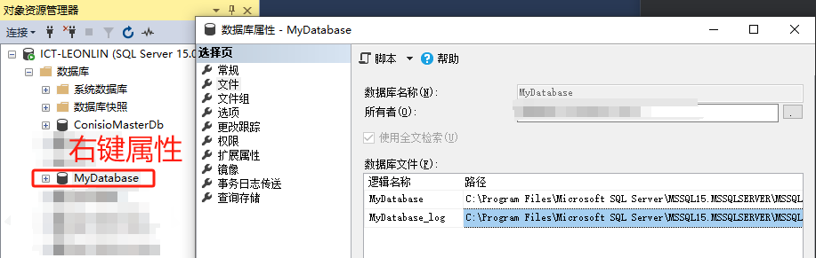

SQLserver清理日志
随着系统运行时间的推移，数据库日志文件会变得越来越大，这时我们需要对日志文件进行备份或清理。
直接删除
在SQL管理器分离数据库。
对数据库日志文件进行压缩备份（rar, zip）
直接删除ldf文件。
再附加数据库。若出现下图错误，选择日志文件记录（提示文件找不到），点下面的【按钮】删除！
附加数据库文件成后，查阅本地数据库文件，发现重新生成的日志文件为504KB。
收缩文件
分两步操作：
step 1.操作步骤：在数据库右键 –> 数据库属性 –> 选项 –> 将数据库【恢复模式】修改为【简单】。 点确定按钮。
step 2.在数据库右键 –> 任务 –> 收缩 –>文件 –>文件类型选择【日志】 –> 将文件收缩到1MB。 点确定按钮。
最后：为了安全最好再改回 step 1。

参考
转：http://www.csframework.com/archive/1/arc-1-20201126-2946.htm